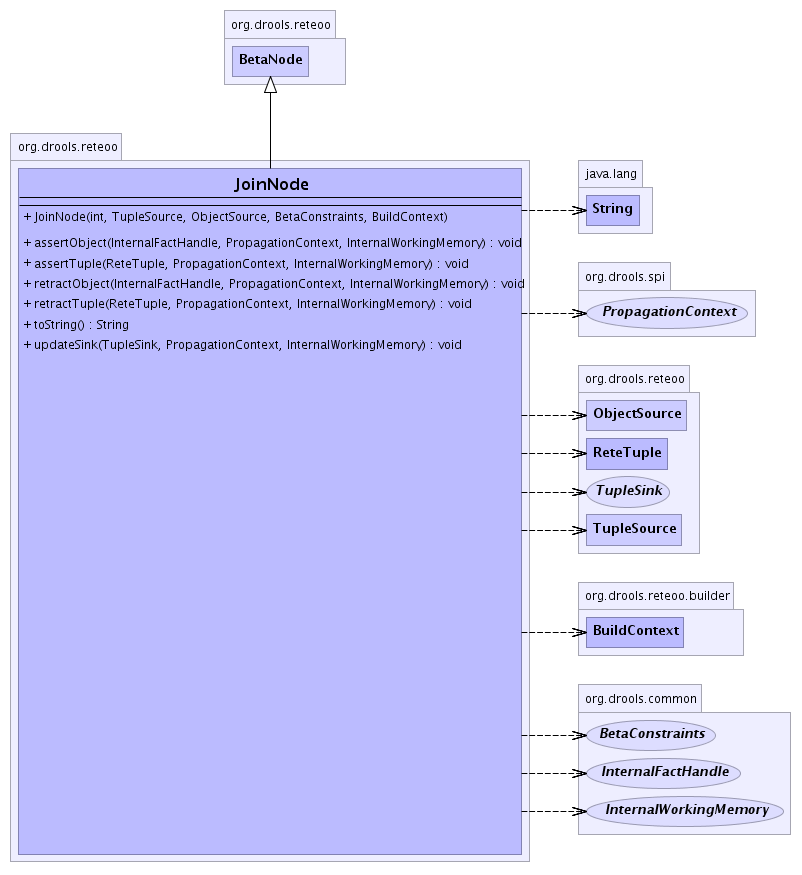

TuplesMatches - The tuples that are matched with the handle. the left memory is a LinkedList
of ReteTuples which maintains a HashMa, where the keys are the matching FactHandleImpls and the value is
populated TupleMatchees, the keys are matched fact handles. TupleMatch maintains a List of resulting joins,
where there is joined ReteTuple per TupleSink.
The BetaNode provides
the BetaMemory which stores the
- See Also:
BetaNode,
ObjectMatches,
TupleMatch,
TupleSink,
Serialized Form
-
- 
| Fields inherited from class org.drools.common.BaseNode |
id |
|
Method Summary |
void |
assertObject(InternalFactHandle handle,
PropagationContext context,
InternalWorkingMemory workingMemory)
Assert a new FactHandleImpl. |
void |
assertTuple(ReteTuple leftTuple,
PropagationContext context,
InternalWorkingMemory workingMemory)
Assert a new ReteTuple. |
void |
attach()
Attaches the node into the network. |
void |
attach(InternalWorkingMemory[] workingMemories)
|
java.lang.Object |
createMemory(RuleBaseConfiguration config)
Creates a BetaMemory for the BetaNode's memory. |
void |
dumpMemory(InternalWorkingMemory workingMemory)
|
boolean |
equals(java.lang.Object object)
|
BetaNodeFieldConstraint[] |
getConstraints()
|
ObjectSinkNode |
getNextObjectSinkNode()
Returns the next node |
TupleSinkNode |
getNextTupleSinkNode()
Returns the next node |
ObjectTypeNode |
getObjectTypeNode()
|
ObjectSinkNode |
getPreviousObjectSinkNode()
Returns the previous node |
TupleSinkNode |
getPreviousTupleSinkNode()
Returns the previous node |
java.util.List |
getRules()
|
int |
hashCode()
The hashCode return is simply the unique id of the node. |
boolean |
isObjectMemoryEnabled()
|
boolean |
isTupleMemoryEnabled()
|
void |
remove(RuleRemovalContext context,
BaseNode node,
InternalWorkingMemory[] workingMemories)
Removes the node from teh network. |
void |
retractObject(InternalFactHandle handle,
PropagationContext context,
InternalWorkingMemory workingMemory)
Retract a FactHandleImpl. |
void |
retractTuple(ReteTuple leftTuple,
PropagationContext context,
InternalWorkingMemory workingMemory)
Retract a ReteTuple. |
void |
setNextObjectSinkNode(ObjectSinkNode next)
Sets the next node |
void |
setNextTupleSinkNode(TupleSinkNode next)
Sets the next node |
void |
setObjectMemoryEnabled(boolean objectMemory)
|
void |
setPreviousObjectSinkNode(ObjectSinkNode previous)
Sets the previous node |
void |
setPreviousTupleSinkNode(TupleSinkNode previous)
Sets the previous node |
void |
setTupleMemoryEnabled(boolean tupleMemoryEnabled)
|
java.lang.String |
toString()
|
void |
updateSink(TupleSink sink,
PropagationContext context,
InternalWorkingMemory workingMemory)
|
| Methods inherited from class java.lang.Object |
clone, finalize, getClass, notify, notifyAll, wait, wait, wait |
leftInput
protected final TupleSource leftInput
- The left input
TupleSource.
rightInput
protected final ObjectSource rightInput
- The right input
TupleSource.
constraints
protected final BetaConstraints constraints
objectMemory
protected boolean objectMemory
tupleMemoryEnabled
protected boolean tupleMemoryEnabled
JoinNode
public JoinNode(int id,
TupleSource leftInput,
ObjectSource rightInput,
BetaConstraints binder,
BuildContext context)
assertTuple
public void assertTuple(ReteTuple leftTuple,
PropagationContext context,
InternalWorkingMemory workingMemory)
- Assert a new
ReteTuple. The right input of
FactHandleInput's is iterated and joins attemped, via the
binder, any successful bindings results in joined tuples being created
and propaged. there is a joined tuple per TupleSink.
- Parameters:
tuple - The Tuple being asserted.context - The PropagationContextworkingMemory - The working memory seesion.- See Also:
ReteTuple,
ObjectMatches,
TupleSink,
TupleMatch
assertObject
public void assertObject(InternalFactHandle handle,
PropagationContext context,
InternalWorkingMemory workingMemory)
- Assert a new
FactHandleImpl. The left input of
ReteTuples is iterated and joins attemped, via the
binder, any successful bindings results in joined tuples being created
and propaged. there is a joined tuple per TupleSink.
- Parameters:
handle - The FactHandleImpl being asserted.context - The PropagationContextworkingMemory - The working memory seesion.- See Also:
ReteTuple,
ObjectMatches,
TupleSink,
TupleMatch
retractObject
public void retractObject(InternalFactHandle handle,
PropagationContext context,
InternalWorkingMemory workingMemory)
- Retract a FactHandleImpl. Iterates the referenced TupleMatches stored in
the handle's ObjectMatches retracting joined tuples.
- Parameters:
handle - the being retractedcontext - The PropagationContextworkingMemory - The working memory seesion.
retractTuple
public void retractTuple(ReteTuple leftTuple,
PropagationContext context,
InternalWorkingMemory workingMemory)
- Retract a
ReteTuple. Iterates the referenced
TupleMatche's stored in the tuples Map
retracting all joined tuples.
- Parameters:
key - The tuple key.context - The PropagationContextworkingMemory - The working memory seesion.
updateSink
public void updateSink(TupleSink sink,
PropagationContext context,
InternalWorkingMemory workingMemory)
- Specified by:
updateSink in class TupleSource
toString
public java.lang.String toString()
getConstraints
public BetaNodeFieldConstraint[] getConstraints()
attach
public void attach()
- Description copied from class:
BaseNode
- Attaches the node into the network. Usually to the parent
ObjectSource or TupleSource
- Specified by:
attach in class BaseNode
getRules
public java.util.List getRules()
getObjectTypeNode
public ObjectTypeNode getObjectTypeNode()
attach
public void attach(InternalWorkingMemory[] workingMemories)
- Specified by:
attach in class BaseNode
remove
public void remove(RuleRemovalContext context,
BaseNode node,
InternalWorkingMemory[] workingMemories)
- Description copied from class:
BaseNode
- Removes the node from teh network. Usually from the parent
ObjectSource or TupleSource
- Specified by:
remove in class BaseNode
isObjectMemoryEnabled
public boolean isObjectMemoryEnabled()
- Specified by:
isObjectMemoryEnabled in interface ObjectSink
setObjectMemoryEnabled
public void setObjectMemoryEnabled(boolean objectMemory)
- Specified by:
setObjectMemoryEnabled in interface ObjectSink
isTupleMemoryEnabled
public boolean isTupleMemoryEnabled()
- Specified by:
isTupleMemoryEnabled in interface TupleSink
setTupleMemoryEnabled
public void setTupleMemoryEnabled(boolean tupleMemoryEnabled)
- Specified by:
setTupleMemoryEnabled in interface TupleSink
dumpMemory
public void dumpMemory(InternalWorkingMemory workingMemory)
hashCode
public int hashCode()
- Description copied from class:
BaseNode
- The hashCode return is simply the unique id of the node. It is expected that base classes will also implement equals(Object object).
- Overrides:
hashCode in class BaseNode
equals
public boolean equals(java.lang.Object object)
- Overrides:
equals in class java.lang.Object
createMemory
public java.lang.Object createMemory(RuleBaseConfiguration config)
- Creates a BetaMemory for the BetaNode's memory.
- Specified by:
createMemory in interface NodeMemory
getNextTupleSinkNode
public TupleSinkNode getNextTupleSinkNode()
- Returns the next node
- Specified by:
getNextTupleSinkNode in interface TupleSinkNode
- Returns:
- The next TupleSinkNode
setNextTupleSinkNode
public void setNextTupleSinkNode(TupleSinkNode next)
- Sets the next node
- Specified by:
setNextTupleSinkNode in interface TupleSinkNode
- Parameters:
next - The next TupleSinkNode
getPreviousTupleSinkNode
public TupleSinkNode getPreviousTupleSinkNode()
- Returns the previous node
- Specified by:
getPreviousTupleSinkNode in interface TupleSinkNode
- Returns:
- The previous TupleSinkNode
setPreviousTupleSinkNode
public void setPreviousTupleSinkNode(TupleSinkNode previous)
- Sets the previous node
- Specified by:
setPreviousTupleSinkNode in interface TupleSinkNode
- Parameters:
previous - The previous TupleSinkNode
getNextObjectSinkNode
public ObjectSinkNode getNextObjectSinkNode()
- Returns the next node
- Specified by:
getNextObjectSinkNode in interface ObjectSinkNode
- Returns:
- The next ObjectSinkNode
setNextObjectSinkNode
public void setNextObjectSinkNode(ObjectSinkNode next)
- Sets the next node
- Specified by:
setNextObjectSinkNode in interface ObjectSinkNode
- Parameters:
next - The next ObjectSinkNode
getPreviousObjectSinkNode
public ObjectSinkNode getPreviousObjectSinkNode()
- Returns the previous node
- Specified by:
getPreviousObjectSinkNode in interface ObjectSinkNode
- Returns:
- The previous ObjectSinkNode
setPreviousObjectSinkNode
public void setPreviousObjectSinkNode(ObjectSinkNode previous)
- Sets the previous node
- Specified by:
setPreviousObjectSinkNode in interface ObjectSinkNode
- Parameters:
previous - The previous ObjectSinkNode
 org.drools.common.BaseNode
org.drools.common.BaseNode